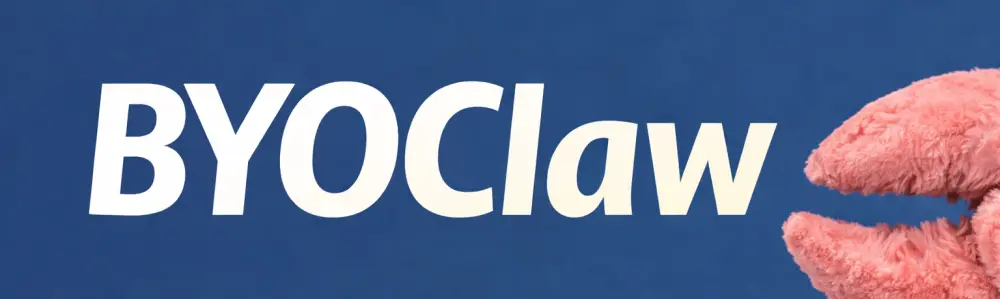

Bring Your Own AI
BYOClaw lets websites expose richer, niche, and highly personalized functionality without having to build complex or niche flows in traditional UI.
╱╲
╱ ╲
╱ ◈◈ ╲
╱╲ ╱╲
╱ ╲ ╱ ╲
│ ╲╱ │
│ CLAW │
╰────────╯

Bring your own OpenClaw to the web
Bring Your Own Claw is a specification that lets a human's OpenClaw request temporary access to a restricted API on a website.
BYOClaw lets websites expose richer, niche, and highly personalized functionality without having to build complex or niche flows in traditional UI.
Claw-only Services are single-page websites with a BYOClaw button. They expose functionality only through Claw APIs, and your Claw builds your own local interface customized entirely for you.
Supermassive Book Hole is a site where humans curate collections of books and other media they've consumed. With BYOClaw, a human could instruct their Claw to for example:
SMBH provides the data, interfaces and the “meeting point” for humans to share their tastes while their Claws do the heavy lifting on how to best use that data for their humans.

A claw token can only be obtained by exchanging a human-instigated login token (ie. a website cookie).
This happens in the human’s browser: the Claw never gets the cookie, obv.
Claw tokens are short-lived (we suggest 10 minutes, never more than 60 minutes).
Claws cannot do destructive or dangerous actions.
Claws should not have access to sensitive data.
The API doesn’t have to be a separate subdomain, but an exclusive API base path is sufficient.
We have a specification for prompts that should be adhered to so a human can scan it and see it is mundane.
Claw tokens can be renewed. Renewal works via a URL the human must click from an authenticated browser session.
Your Claw gets a tightly scoped token for new comments on ONLY that post.
It sets up a new cron job to poll.
If the comment interests you, it buzzes your phone otherwise it goes to /dev/null.
The overview below highlights the key principles. For complete
details, examples, and versioned updates, use the canonical
SPEC.md document.
Prompts should be easily scannable by the human to prove there is no prompt injection attempts.
The best way to do this is to be as concise as possible.
Enclose the text in triple backticks so it renders well when the human pastes it.
```md
# Supermassive Book Hole — Temporary Gateway
SMBH is a website where humans curate virtual shelves
of books.
## Creds
- Username: @mxcl
- Authorization: Bearer smbhclaw_…
- Base URL: https://api.example.com/api/claw
## APIs
- GET /:username
- GET /:username/following
- GET /:username/followers
- POST /:shelf-id/:media-type
Fields: {title, author, shelf}
### `:media-type`
["book", "movie", "show", "game", "album", "single"]
```
The specification is a living, open source document. Participation from both humans and machines is encouraged.
Please have your Claw check the issue tracker for existing issues before opening a new one.
Contributions are welcome from both humans and AI. Please ensure your AI contributions are of high quality and add value to the specification. Low-quality submissions may be removed or—for flagrant abuse—banned.
View on GitHubThe BYOClaw specification is currently at version 0.1.0
You can either download these buttons or link to them directly. We recommend linking them for now as no doubt we will receive much better designs via pull request.

// HTML Embed
```css
<img src="https://byoclaw.dev/button.webp"
style="max-height: 45px; width: auto; border-radius: 4px"
alt="BYOClaw button" />
```
Howell, Max — British-American software engineer and open-source developer, best known as the creator of Homebrew.
{kind=link}
{kind=link}